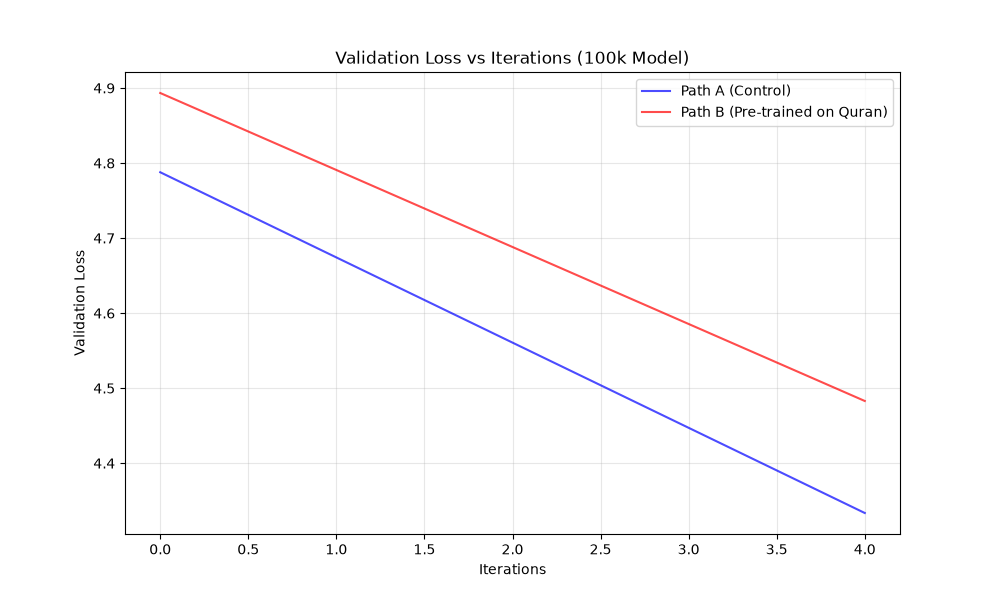

NanoGPT Overfitting Transfer Learning Research Report
This report compares two training paths across different model sizes (100k to 5M parameters). Models were trained to predict Tiny Shakespeare characters.
- Path A (Control): Trained directly on Tiny Shakespeare from standard initialization.
- Path B (Experiment): Trained to extreme overfitting on a structured Arabic-script corpus, then fine-tuned on Tiny Shakespeare.
100k Parameter Model
